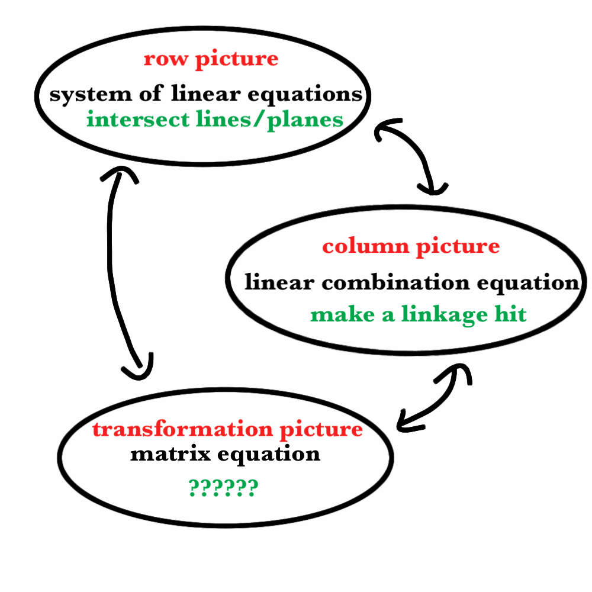

Watch another video of Essence of Linear Algebra by YouTube user
3Blue1Brown. I suggest
Chapter 3, if
you haven't watched it, yet. Maybe rewatch it if you have already seen it.
Read the following and complete the exercises below
SubsectionLearning Goals
Before class, a student should be able to:
Translate back and forth between the three algebraic representations:
A system of linear equations.
An equation involving a linear combination of vectors.
A matrix equation.
Write down the \(n \times n\)identity matrix.
Sometime in the near future, a student should be able to:
Given a system, interpret and plot the “row picture”.
Given a system, interpret and plot the “column picture”.
Use a matrix as a model of a transformation, including stating
the domain and the range.
SubsectionDiscussion
Now we have a little experience with vectors and related things, it is
time to be aware of what we have done so we can use it as a foundation for
future work. So far, we have talked about two geometric interpretations
for a system of linear equations, the row picture and the
column picture.
Does the following picture make sense to you?
Figure2.1The three geometric models of linear algebra
A deep understanding of linear algebra will involve a level of comfort with
each of these three views of the subject in the diagram, and also the ability
to pass back and forth between them.
SubsubsectionThe Transformational View
We have seen that matrices can be made to "act upon" vectors by a kind of
multiplication. In particular, if \(A\) is an \(m\times n\) matrix,
then \(A\) can be multiplied (on the left) with a column vector of size
\(n\), and the result is a column vector of size \(m\).
This makes \(A\) into a kind of function. (We will use
the synonyms mapping or transformation, too.)
For every vector \(v\) of size \(n\), the matrix \(A\) allows
us to compute a new vector \(T_A(v) = Av\) of size \(m\). This is
the basic example of what professionals call a linear
transformation.\begin{align*}
\mathbb{R}^n & \xrightarrow[]{T_A} \mathbb{R}^m\\
v & \xmapsto[]{\phantom{T_A}} Av.
\end{align*}
One of our long term goals is to learn to think about the geometry
of linear algebra from this viewpoint, too.
SubsectionSageMath and Plotting for Linear Algebra
There are a few new SageMath commands that might be useful here. We have
already seen how to take linear equations and turn them into vectors
and then turn the vector equation into a matrix equation. But SageMath can
help us move in the other direction, too.
The keys are commands to pull out the rows and columns from a given matrix.
Let's start with a simple situation where the matrix equation is
\begin{equation*}
\begin{pmatrix} 2 & 1 \\ 1 & 1 \end{pmatrix}
\begin{pmatrix} x \\ y \end{pmatrix} =
\begin{pmatrix} 3 \\ 4 \end{pmatrix}.
\end{equation*}
To get SageMath to pull out the columns, we can use the .columns()
method. If we want just one column, we can use the .column() method,
but then we have to remember to specify which column we want.
Big important note: SageMath always numbers lists starting with zero.
so the first element of every list is the \(0\) entry, and the second
element is the \(1\) entry.
Now it is possible to make SageMath do things like this:
This is an example of the a column picture.
One can also pull out the rows with corresponding .rows() and
.row() methods. And if you
recall the way that matrix multiplication works if you think of rows, you
can make a row picture. Note that now the "variable vector" X we made
above helps us out here.
And now the picture:
SubsectionExercises
Task21
Make an example of a system of linear equations which some students might
find challenging to change into an equation involving a linear combination.
Explain what the challenge is and how you can think clearly to overcome it.
Make an example of a linear combination equation which some students might
find challenging to change into a system of linear equations. Explain
what the challenge is and how you can think clearly to overcome it.
Task22
Consider the matrix equation\begin{equation*}
\begin{pmatrix}1 & 2 & 4 \\ 2 & 0 & 1 \end{pmatrix}
\begin{pmatrix} x \\ y \\ z \end{pmatrix} = \begin{pmatrix} -1 \\ 3
\end{pmatrix}.
\end{equation*}
Draw a diagram representing the row picture of this matrix equation.
Draw a diagram representing the column picture of this matrix equation.
If you find the sketching to be a challenge, feel free to use SageMath to do it.
Task23
Make an example of a system of linear equations so that the
corresponding column picture is about linear combinations of four 2-vectors
becoming the zero vector.
Task24
Find a linear combination equation so that the corresponding system of
linear equations corresponds to finding the intersection of three lines
in the plane.
Task25
Consider the matrix equation \begin{equation*}
\begin{pmatrix} -1 & 2 \\ 5 & -9 \end{pmatrix} v = b
.\end{equation*}
What shape of vectors must \(v\) and \(b\) be so that this
equation makes any sense?
Find an example of a vector \(b\) of the correct size so that the
equation has no solution \(v\), or explain why it is impossible to find
such an example.
Task26
In each of the below, find an example of a matrix \(B\) which has the
described effect.
\(
B\begin{pmatrix} x \\ y \end{pmatrix} = \begin{pmatrix}y \\ x \end{pmatrix}
\)
Rotates vectors through \(45^{\circ}\) counter-clockwise.
Reflects vectors across the \(y\)-axis.
\(
B\begin{pmatrix} x \\ y \end{pmatrix} =
\begin{pmatrix} x+y \\ y \end{pmatrix}.
\)